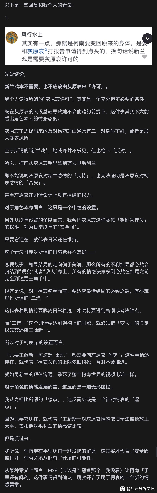

想问问文吧的大家怎么看待呢
想问问文吧的大家怎么看待呢

没看懂他想表达什么
2024-08-29 23:17 | Wf_yjqd:+12024-08-29 23:43 | 无尽星空112:+12024-08-30 00:52 | 梦甜心小萌:+12024-09-01 17:15 | mangomengke07:+12024-09-05 02:31 | 遥遥爱吃辣º:意思是如果柯的变大变小决定权在自己手上 就能完全展露他的真实感情，不会被解药给不给的因素所束缚，这次m26是重大突破，剧情里有一幕柯南手里是有解药的2024-09-05 06:32 | 时间嘀嘀嗒嘀嗒:回复 遥遥爱吃辣º :那这个人绕了半天原来就为了说这个2024-09-05 13:48 | 遥遥爱吃辣º:。可是红修的时候柯南就藏了解药啊，为什么这人要拿m26说事
回复 时间嘀嘀嗒嘀嗒 :我觉得可能因为意义不一样 你想以前柯南所谓的讨好对哀酱大家的解读可能存在为了得到解药去找小兰，但是m26这个时候他自己身上是有哀给的解药，而且这一次他有想法要吃解药变大救人的对象是谁，是小哀，真正意义上感情的一大突破的感觉 可以细品2024-09-05 13:58 | 时间嘀嘀嗒嘀嗒:回复 遥遥爱吃辣º :那如果要这样解读的话，m26也可以说只是为了救人，已经万不得已所以才用解药，不管对方是谁。感觉说服力不是很强2024-09-05 14:02 | 时间嘀嘀嗒嘀嗒:回复 遥遥爱吃辣º :所以我的意见还是，如果是拿解药说事的话，红修的时候柯南就已经瞒下了一颗解药，亲一口用不了多久，更别说手上还有药。红修就能看出柯南的重心已经偏向灰原了不用等到m262024-09-05 14:02 | 遥遥爱吃辣º:回复 时间嘀嘀嗒嘀嗒 :他这个只是指出的一个点，我看m26更觉得触动的是，小哀被抓走那段，柯南那段奋不顾身也要跳悬崖那段，还有他失去理智又或者极度着急情况下对佐藤失态吼她，这真的是在柯南这部作品里所少见的2024-09-05 14:04 | 时间嘀嘀嗒嘀嗒:回复 遥遥爱吃辣º :我也是觉得那段比解药更能体现柯南的慌乱，各种江户川乱x2024-09-05 14:41 | 遥遥爱吃辣º:回复 时间嘀嘀嗒嘀嗒 :对对 还有小哀叫他新一了！！！
解药也是安全屋的一部分，对如今的柯哀来讲确实有点像枷锁了，所以我很期待朗姆篇之后柯哀摊牌的样子。
仅从cp的角度来讲，解药准确的讲限制的是“优势方”，对象是可以随着剧情发展变化的。
2024-09-05 09:01 | 洛易梦:解药是用柯南的不靠谱去垫小哀的靠谱，危命是身份暴露可以理解、死罗神是误拿可以接受，伦敦篇和红修篇都是为了玩引发一系列麻烦柯南就显得很坑，默默处理好一切的小哀就被对比出来了
个人觉得是有道理的，不过中间说的有些绕。他的意思是最终是否变大必须要由柯南自己来决定，去变大则选择兰姐，不去变大则选择哀，而柯哀保留的这颗解药给了选择的余地，这一点个人认为是没问题的
2024-08-30 10:30 | Angel哀ლ:回复 cot😡 :hhh，谢谢认可2024-08-31 00:41 | 天平的路口:我也是读了几遍才理解到一点
变大不边大都是和新兰不绑定的，选择哀也要变大。2024-08-31 11:29 | 贴吧用户_5e3XaDN:我要新志2024-08-31 14:38 | Angel哀ლ:回复 天平的路口 :说是这么说，但从塑造难度来看新志是要比柯哀更大一些的，这个帖子的意思是选择权，而并非最终的结局，当然选择哀也有变大的可能，不过我个人认为不是必然的，换句话说，选了哀也完全可以不变大2024-08-31 14:39 | Angel哀ლ:回复 贴吧用户_5e3XaDN :hhh，我个人更倾向小的就按小的说了，但其实一样的2024-08-31 14:46 | 天平的路口:回复 Angel哀ლ :m26原本柯为哀变大，新志性张力完爆新兰，论后续比新兰更大发展要靠新志去描写。也能更让大众接受新志2024-08-31 15:30 | Angel哀ლ:回复 天平的路口 :跟新兰比肯定是都好，只是我个人偏小的罢了，当然新志也是很不错的

首先，我只知道，新一在续上一颗药和mll接吻与省下一颗药备用中选择了后者。
实际上他存在一定的前后矛盾：
前面写我哀在剧情设计上没有拒绝给药的权利。这我承认
而后面说如果药不让新一保存，就体现不出“二选一”。既然哀一定会给药了，在谁手上有区别吗。不至于碍于情面不敢开口要吧。
就比如省下那颗药，你猜新一会用在哪呢。。
实际上他存在一定的前后矛盾：
前面写我哀在剧情设计上没有拒绝给药的权利。这我承认
而后面说如果药不让新一保存，就体现不出“二选一”。既然哀一定会给药了，在谁手上有区别吗。不至于碍于情面不敢开口要吧。
就比如省下那颗药，你猜新一会用在哪呢。。
2024-08-29 23:42 | Angel哀ლ:这里说的确实不够清楚，反正我也没怎么看懂2024-08-30 00:05 | 櫻井青城:不过我猜他可能是想说一种塑造上的感觉？就是如果一直是问哀要的话，可能就只能局限于变大去写新兰戏？然后如果自己手头有药，就有了写为了哀变大的空间？（比如类似m26那种），不懂，看不明白
回复 Wf_yjqd :重点不在哀给不给药上，而是柯南的心意。在他还需要找哀要药的时候，他的心意和行动就很有可能被解读为“为了药”（潜台词就是为了兰），当他不再需要找哀要解药时，那他对哀的心意和行为就无法再轻易被解读为“为了药”，而是“为了哀”了。2024-08-30 00:32 | 贴吧用户_0bDS2EM:最后那颗，在m26企划时被否决了2024-08-30 09:00 | Angel哀ლ:回复 櫻井青城 :这个解读挺有意思，有道理2024-08-30 12:17 | sbnsbssb:回复 櫻井青城 :这个角度是对的，这也是sr否定柯对哀感情的最重要筹码 ，柯肯定不这么认为，但哀可能会这么想：他对我好是不是大部分是为了药？
看了两遍，没看懂他想表达啥，还有新兰的短信沟通并没有锁死柯南世界的视频电话啊，柯哀之间就出现过两次视频电话
2024-08-30 06:51 | 神的评论就是:这个意思是视频电话不能普及（到兰手中）吧，新兰不能视频电话得持续很长时间，不然剧情不好处理2024-09-01 17:17 | mangomengke07:是的，语文捉急
但是在剧情上，哀是完全可以决定是否给解药的，这二者其实并不矛盾，只是出于人设考虑哀绝不会故意阻止他
2024-08-29 23:28 | Wf_yjqd:额，确实，我哀是这样的
换句话说，他这个结论个人觉得可以，基本能get到是啥意思，但是中间说的确实有些绕
这个在回复里有后续
其实一个说的是二次元剧情上的间接性，一个是三次元作者设计上的直接性
前面我觉得没问题，“问药环节锁死了柯哀关系”没看懂。
大概他的逻辑是，无论最后是哪边结局，出于他所谓剧情设计角度，最后必然会将选择权交给工藤新一。出于这个角度，只要工藤新一还依赖于灰原哀的解药，他们的关系就难以得到真正的突破。我无法理解的点，主要在于他这个剧情设计角度的大前提。
柯南是有一颗备用解药没错，然而归根结底这颗解药还是之前灰原哀给他的。从情节安排的角度来看的，这种事儿压根无关紧要吧。确实73很有可能会在结局或者某个剧情高潮点选择让柯南变成新一。但是这件事儿和解药在谁手上本身没有强关联。在可能的大决战之前，73可以让柯南掏出伦敦篇保留下的解药，做一个小小的伏笔回收。另一种情况，柯南手上就没有解药，而是在决战开始前，73安排一小段情节，柯南临时向灰原哀求一颗解药用作保险。这两种情况无论是哪一种都只能算是小插曲，根本无关紧要。也影响不了所谓男主自己的决定权。我是这样认为的。
大概他的逻辑是，无论最后是哪边结局，出于他所谓剧情设计角度，最后必然会将选择权交给工藤新一。出于这个角度，只要工藤新一还依赖于灰原哀的解药，他们的关系就难以得到真正的突破。我无法理解的点，主要在于他这个剧情设计角度的大前提。
柯南是有一颗备用解药没错，然而归根结底这颗解药还是之前灰原哀给他的。从情节安排的角度来看的，这种事儿压根无关紧要吧。确实73很有可能会在结局或者某个剧情高潮点选择让柯南变成新一。但是这件事儿和解药在谁手上本身没有强关联。在可能的大决战之前，73可以让柯南掏出伦敦篇保留下的解药，做一个小小的伏笔回收。另一种情况，柯南手上就没有解药，而是在决战开始前，73安排一小段情节，柯南临时向灰原哀求一颗解药用作保险。这两种情况无论是哪一种都只能算是小插曲，根本无关紧要。也影响不了所谓男主自己的决定权。我是这样认为的。
2024-08-30 00:02 | 梦违观音◎:总之，现阶段，解药当然只能来自于灰原哀本身。无论是柯南自己求来的，还是灰原哀主动给的，是以前就保留下来的，还是临时给的。我觉得对总体剧情走向都影响不大，没必要放大这点过于看重了
只要柯南还需要从哀手中拿解药，那他所有向哀低头、哄哀、关心哀的行为都可以被解读为“是为了解药”，只有变大权在他自己手中时，才能看出他的真心。这个分析是对的，在相当长的一段时间里解药确实是枷锁，但也是保护，保护这份感情不要太快暴露，以免在稳固前受到外界影响。如此看来M26的意义比想象中的还要重大啊。
2024-08-30 00:17 | 櫻井青城:回复 櫻井青城 :同时，也可以让柯南去正视这份情意，我们能给出“你是为了解药”的解读，柯南大概也会给出这个答案，只有当他发现自己已不必再“讨好”哀，而那份心意却仍不消散时，他才能意识到这份感情的存在吧。
看懂了，毛利兰还是死死吧
2024-08-30 12:13 | sbnsbssb:才不要她死，其实死的那个才是感情里的赢家，因为死的那个柯南会永远记得，永远是白月光，得不到的最珍贵，我不要她死，我只要大侦探对她的滤镜破碎掉。2024-08-30 12:57 | jyhn45:回复 sbnsbssb :有道理啊
大概意思是说：哀不会因为阻扰sr而拒绝给药，真正的给药权掌握在青山手里。这话没毛病的。
就是要把决定权全权交给柯子啊
当他完全掌握了身体变大变小的权力以后，他所做的行为就直接体现他内心深处真正的感情。
举个例子就是红修篇，新一想和兰完成接吻，他是有机会的，服下解药就可以了。如果他没有解药这时候被迫变小也许就会给人造化弄人之感，就像前面的危命篇，死罗神篇，“真不甘心啊”，“我还没和兰说出那句话，可恶”这样之类的，就会变成新兰之所以不能在一起是因为新一身体变小。
但是事实果真如此吗?看过红修篇的人就会产生这样的疑问，你/我明明有机会啊...为什么不呢? 难不成...你/我是在...逃避吗?读者和新一自己都会生出这样的疑问
柯哀关系大概也是如此，这个男孩是为了回到心上人身边才待在这个女孩身边的，他和她所有的关系不过是逢场作戏，是为了解药，大概会有人这么想。可是当他真正拿到解药的时候，为什么不去完成自己的夙愿呢，这颗解药，也可以为了哀而用吗?不惜浪费掉这颗好不容易省下来的解药，也要去救她。
你/我到底是怎么想的，你/我是怎么看待她的呢，不是利用，不是谄媚，而是想要守护的心情。
最终决定权在柯子，这时候什么理由什么借口都不好使了，无关外在，无关他人，你/我到底是怎么想的，是读者，也是新一自己对自己的叩问。
当他完全掌握了身体变大变小的权力以后，他所做的行为就直接体现他内心深处真正的感情。
举个例子就是红修篇，新一想和兰完成接吻，他是有机会的，服下解药就可以了。如果他没有解药这时候被迫变小也许就会给人造化弄人之感，就像前面的危命篇，死罗神篇，“真不甘心啊”，“我还没和兰说出那句话，可恶”这样之类的，就会变成新兰之所以不能在一起是因为新一身体变小。
但是事实果真如此吗?看过红修篇的人就会产生这样的疑问，你/我明明有机会啊...为什么不呢? 难不成...你/我是在...逃避吗?读者和新一自己都会生出这样的疑问
柯哀关系大概也是如此，这个男孩是为了回到心上人身边才待在这个女孩身边的，他和她所有的关系不过是逢场作戏，是为了解药，大概会有人这么想。可是当他真正拿到解药的时候，为什么不去完成自己的夙愿呢，这颗解药，也可以为了哀而用吗?不惜浪费掉这颗好不容易省下来的解药，也要去救她。
你/我到底是怎么想的，你/我是怎么看待她的呢，不是利用，不是谄媚，而是想要守护的心情。
最终决定权在柯子，这时候什么理由什么借口都不好使了，无关外在，无关他人，你/我到底是怎么想的，是读者，也是新一自己对自己的叩问。
2024-08-30 00:23 | 贴吧用户_G2e8yAP:毕竟柯南有爱情白痴的设定，多出来的解药说白了就是挑明感情线的作用。 毕竟要把新兰和柯哀放在一起衡量得真正等到我们的大男主自己意识到了的时候才行。
https://www.zhihu.com/question/557395182/answer/3584891041?utm_psn=1812646119202762752，补一下回答的链接
2024-08-30 02:46 | mojor😺:网页链接2024-08-30 08:58 | Angel哀ლ:这说得挺好的，整体来看就容易理解了，至于后面楼主截出来的回答中间有一些不好理解的，有一部分原因应该是他相对还是偏路人，没有完整看过所有情节导致的吧
确实没有问题
缩写:当柯手里无药时，如果他想去推进新兰，就必须经过柯哀的互动，但推进柯哀时也是经过柯哀互动，所以此时的柯哀互动有两种导向，不一定真真切切推进了柯哀的进程
2024-08-30 00:25 | 骚气老陈666:反而当26里将手握一颗解药的事实曝光后，柯想推进新兰不需要再经过柯哀的互动，从此柯哀的互动只有一个导向，就是推进柯哀2024-08-30 15:16 | ssc200311:有道理2024-08-31 13:16 | 月名殇:回复 骚气老陈666 :2024-09-02 10:21 | vvvvxxxxx:这个角度无敌 在后续存在的柯哀剧情中把质疑柯哀的新兰党的嘴堵得严严实实
这下看懂了
戏内是新一不想变大，戏外是刚子不愿意画，难道作者是不会刻画cp吗？要想推进sr关系，等小兰生日篇吧
2024-09-02 07:20 | 顽皮鬼才:作者确实很不愿意画。作者只允许解药为哀而用，为其他人而用的言论不是云就是瞎yy。
他是想说，剧情上要脱离出“柯想恢复真身就得找哀要解药”的怪圈，只要柯能够自主决定是否恢复身体而非把能否回复身体的决定权放在哀身上，那么在这里柯再在面对要恢复身体的事件时，他是否恢复身体去演新兰戏都不需要再经过哀，没有了向哀求药的必要性了。这时柯再想恢复身体，如果他向哀求药，说明他会在乎哀对于自己去恢复身体演新兰戏的想法。
论证观点时能不能先一句话概括一下
好像是没啥问题，且m26已经有往这方面靠的意思了，不过还是没摆到台面上。即他这个药在兰哀都遇到危险时，柯南会做何选择
好像是没啥问题，且m26已经有往这方面靠的意思了，不过还是没摆到台面上。即他这个药在兰哀都遇到危险时，柯南会做何选择
我觉得灰原哀许可是一个客观存在，只不过基于哀的性格，她不会故意去为难。她会根据柯南身体情况和是否必要来判断，当然如果小柯非常想要估计会给。这个设计理论上确实比较中性，但这个想法是把哀架在极端理性的高度的，说句不好听的，感情深了不想给了又怎么了？但我不认为新要药跟柯哀兰关系必然挂钩，因为柯不为了兰也是想长大的，我认为这个是小柯对变回新一是否执着的提现，是他对自我认知的确认。我不觉得跟柯哀感情上限有关系。事实上m26小柯在以小孩身体救不了毛利兰的时候，他已经在思考了。所以新变不变大，他都已经开始思考了。作者的意思应该是新一要能自由变大在二选一中才能提现感情倾向吧，但我不认为，毕竟m18告诉你了，在射击来临的三角位，只有柯哀双向奔赴，而且这时候毛利兰还在尖叫。
话没什么问题，虽然哀名义上可以控制柯南能不能拿到解药，但柯南作为唯一男主，只有他主动做出来的选择才是重要的，其他被动选择都不重要，哀就算反对新兰也不能以解药要挟柯南；小兰就算反对新志，也不会在明牌柯南身份前阻止柯哀感情线
兰也好、步美也好、哀也好，谁吻了柯南不重要，重要的是柯南主动的吻会给谁；这也是m26里没有让柯南给哀人工呼吸的缘故，人工呼吸就是一个变相的吻，只要柯南做出来选择，那么党争就几乎结束，但新兰志三角明显要等到三个人都平等的状态下进行，现在兰依旧对真相一无所知，在这种情况下柯南真的给了哀人工呼吸，那么新兰线就会败笔、柯哀就会难以收场
现在这就是一个党争番，平和红三角里红叶绝对不能以赌约为要挟去让平次娶她，而平次必须对和叶做出自己的表白；对应到新兰志，最后新一/柯南的选择必须是他自己自愿做出来的选择，不然如果哀拿解药为要挟绑架柯南，那不就跟伦敦篇里兰用线索逼迫新一表白一样了
现在柯南手里还有一颗解药，这件事情哀大概率是不知情的，那么这颗解药就可以代表柯南拥有自己的选择权，柯哀中哀无法以解药为要挟柯南不需要像红修一样以帮哀为报酬（虽然这里设计很心机，帮哀找回挂件但是点歪眼睛）、而新兰中新一不能以柯南的身份逃避，柯哀和新兰这两对cp都达成了平等的前提，只有在这个平等的前提下，这两对cp之间的誓言才有效
那么接下来就看柯南会怎么用属于他自己的药了，总不会是阴差阳错给玛丽偷走拿去吃不（
兰也好、步美也好、哀也好，谁吻了柯南不重要，重要的是柯南主动的吻会给谁；这也是m26里没有让柯南给哀人工呼吸的缘故，人工呼吸就是一个变相的吻，只要柯南做出来选择，那么党争就几乎结束，但新兰志三角明显要等到三个人都平等的状态下进行，现在兰依旧对真相一无所知，在这种情况下柯南真的给了哀人工呼吸，那么新兰线就会败笔、柯哀就会难以收场
现在这就是一个党争番，平和红三角里红叶绝对不能以赌约为要挟去让平次娶她，而平次必须对和叶做出自己的表白；对应到新兰志，最后新一/柯南的选择必须是他自己自愿做出来的选择，不然如果哀拿解药为要挟绑架柯南，那不就跟伦敦篇里兰用线索逼迫新一表白一样了
现在柯南手里还有一颗解药，这件事情哀大概率是不知情的，那么这颗解药就可以代表柯南拥有自己的选择权，柯哀中哀无法以解药为要挟柯南不需要像红修一样以帮哀为报酬（虽然这里设计很心机，帮哀找回挂件但是点歪眼睛）、而新兰中新一不能以柯南的身份逃避，柯哀和新兰这两对cp都达成了平等的前提，只有在这个平等的前提下，这两对cp之间的誓言才有效
那么接下来就看柯南会怎么用属于他自己的药了，总不会是阴差阳错给玛丽偷走拿去吃不（
感觉m26和m27重要的点会不会是把之前被动画组改动过的剧情节点给在大荧幕上还回来？ m26是红修篇最后你柯留药，m27是伦敦篇“告白”名场面，这么看其实或许老贼已经在开始收网了
m26是红修篇最后你柯留药，m27是伦敦篇“告白”名场面，这么看其实或许老贼已经在开始收网了
m26是红修篇最后你柯留药，m27是伦敦篇“告白”名场面，这么看其实或许老贼已经在开始收网了总之如果柯南想要解药永远需要从灰原这边点头的话，那么柯哀之间的cp戏码全部可以解读为新兰在伦敦篇里的“逼迫式表白”，新兰之间的戏码全部可以解读为“柯南没法变成新一、所以无法面对兰”，青山无论是想柯哀还是新兰，都必须让柯南拥有主动权去做出作为男主的选择
红修篇里兰吻新一侧脸不重要，m26里哀给柯南人工呼吸也不重要，但如果红修里是新一主动吻兰、m26里是柯南给哀做人工呼吸，那么就会为这段党争cp划上一个里程碑，党争里几个女生做什么不重要，而男主的主动行为很重要，所以到现在新兰没有正式表白，而柯哀也没有正式的吻，但这两个cp离锁死都只剩下临门一脚，而作为最重要的两对党争cp，青山肯定会拉扯到最后
红修篇里兰吻新一侧脸不重要，m26里哀给柯南人工呼吸也不重要，但如果红修里是新一主动吻兰、m26里是柯南给哀做人工呼吸，那么就会为这段党争cp划上一个里程碑，党争里几个女生做什么不重要，而男主的主动行为很重要，所以到现在新兰没有正式表白，而柯哀也没有正式的吻，但这两个cp离锁死都只剩下临门一脚，而作为最重要的两对党争cp，青山肯定会拉扯到最后
我认为楼上弄错了一个事：新一不是为了省药而不kiss吧？在那时候的情况，他真碰下嘴再跑也来得及吧？所以，我觉得是他开始动摇，单纯就是不想和∠kiss或者说是73不想真让他和∠kiss？
2024-08-30 01:30 | 卖东东的小星星:+1，解药在新一手上，选择权也在他的手上，很显然他已经倾向小哀了。2024-08-30 01:38 | 贴吧用户_0CCSe2P:事情关键就是他本可以而不做，就几秒钟时间，何况药有，可以直接继续吃，吃药在kiss
我觉得他说的挺有道理的，只有把解药选择权还给新一，柯哀才会有进一步升温。
根据💊=🔒的理论，可以推测这颗💊的使用场景。在吃掉这颗药的时候，会有两种导向：1️⃣重新上锁，即再次失去变回新一的主导权；2️⃣锁消失，即再也不需要💊，关于这点至少有三种情况可以实现——他自己能造药了、他完全变回了新一、他再也不用变回新一了……
短信只锁死了sr，并不影响柯哀、三小只和平次之间的视频通话，这个不知道建议多看漫画。然后，柯南是否选择问药变大，和变大后会选择谁是两码事。危命为了身份问题变大，事件解决后才决定约会。死罗神意外变大，快失效时急的不行结果续杯以后进入贤者时间了。伦敦被逼到电话亭变身，还为了线索被迫告白。红修是为了修学旅行求药，把小哀惹急了都想着放弃药不去了，后面续杯接吻的大好机会还自己放弃了。再来m26，这是直接想为了救哀吃药。所以，求药用药的首要目的，目前没有一次是为了跟小兰约会谈恋爱或者救兰，但m26里却明显出现了对哀的倾向。而用药以后变大的状态下，新一对兰的态度出现了逐渐减弱的情况。现在柯南手里省了一颗药，决定权在柯南手里，他能直接决定用药是为了谁，已经不是变大等于选择兰了
他文中有一点是说对的：灰原哀在乎的是新一，而不是新兰如何。
而对他的情感推论，我不置可否。他还是先预设了一个新兰谈恋爱的场景框架，在这个框架上展开对作品的分析。
打补丁的方向，自然是往新兰的方向考虑。
顺着他的思路，这样来推演：如果新一手上没有药（或者说吃完了，有耐药性了），新兰的关系进度还能好吗？这个问题不难回答，大概就是“落叶缤纷的质问”罢了。
而对他的情感推论，我不置可否。他还是先预设了一个新兰谈恋爱的场景框架，在这个框架上展开对作品的分析。
打补丁的方向，自然是往新兰的方向考虑。
顺着他的思路，这样来推演：如果新一手上没有药（或者说吃完了，有耐药性了），新兰的关系进度还能好吗？这个问题不难回答，大概就是“落叶缤纷的质问”罢了。
我个人觉得说柯南能不能变回新一完全取决于哀这个说法是不成立的，事实上柯南想变回新一的次数很少，所谓的为了跟小兰谈恋爱才变大更也只是哀的一句调侃，而柯南想变回新一有几次也单纯只是为了出去玩哀也答应了可以见得哀也不是非要咬死了不能变大这件事不松口，能不能变回去主要还是取决于柯南愿望强不强烈，而且柯南也有自主选择要不要变大的权利，他留着一颗药，是否变回去的主动权始终还是在柯南自己身上，哀只是建议并不能控制柯的行为
驴唇不对马嘴的，又不是宫野志保必须要见江户川柯南变大回工藤新一，而灰原哀随时都可以见江户川柯南，甚至是江户川柯南追着灰原哀让她去见这个男孩。
爆杀啊
爆杀啊
一句话概括就是：只有让柯南自己真正拥有“兰哀二选一”的选择权，才能打破新兰哀之间的僵局。
其实这问题不太成立，小哀现在握着解药不给柯南是其他原因，一是怕组织发现，二现在的解药是临时的，但实际上柯南在伦敦和修学索要解药，小哀也没太限制柯南变回新一，某种意义上柯南变不变大主动权都是在柯南自己手上，小哀顶多像一个安全开关，不太让小柯乱来。
这种就是很正常的讨论观点，而且我觉得他说的很有道理。即使他站新兰，我也没意见。不过其他角÷就不好说了
我只能说这种说法我个人不支持也不反对，因为都有道理和太个人主观臆断。从伦敦篇和红修篇可以看出，柯南对于变回新一已经没有那种渴望了，两次都是为了出去玩儿。毕竟男人至死是少年，能出去撒野可是头等大事。就说柯南求药的表现，像不像这次某些为了求老婆买黑猴的男人？

少有的能站在剧情设计角度而非党争看待作品的言论。
他说的简单归纳就是，
1否定了给不给药的党争属性，说明了给药是剧情结构需要，不是角色行为逻辑（非常赞同）；
2感情戏的终局需要男主来做决定，给药这个行为涉及到哀，相当于干涉到了男主决策，所以只要给药在，柯哀线上限被锁死了。这个点很值得展开说说，但他没说。而且他解释了为什么角姐现在还在用翻盖手机，太多人喜欢用党争来解释手机问题了
3基于2，你柯手里的那颗药是感情戏的关键
他说的简单归纳就是，
1否定了给不给药的党争属性，说明了给药是剧情结构需要，不是角色行为逻辑（非常赞同）；
2感情戏的终局需要男主来做决定，给药这个行为涉及到哀，相当于干涉到了男主决策，所以只要给药在，柯哀线上限被锁死了。这个点很值得展开说说，但他没说。而且他解释了为什么角姐现在还在用翻盖手机，太多人喜欢用党争来解释手机问题了
3基于2，你柯手里的那颗药是感情戏的关键
2024-08-31 02:12 | ◆冰封白羽◆:有没有一种可能，他这个看似只站在剧情需要的立场本来就是从党争出发的，因为新兰恐惧于承认哀手里有决定新兰生死的权力，而是避重就轻要将决定的权力从哀手里势必推给柯南，因为他们潜意识里“让柯南来决定”说明新兰还有很大机会2024-08-31 02:14 | ◆冰封白羽◆:虽然最后和柯哀党所支持的“让柯南自己做出选择”的态度不谋而合了，但是作为新兰不肯给哀任何主宰新兰的可能已经说明一切了，新兰党就是在赌，赌柯南比起哀对兰感情更深
结尾说的挺好，柯南找小哀要解药，无论多离谱的理由小哀最后都会给的，但是作者设置柯南留了一颗药，那么这颗药的用处就大大不同了，我觉得这颗药大概率就是留给小哀用的。
按青山的尿性没准过几年出个主线长篇sr分手都有可能，到时候也无所谓吃不吃解药了
柯南四次吃药：
1、危命，主动给药，目的是解决毛利兰识破身份的危机。后续柯南求药100颗被拒绝。
2、死罗神，误吃，没有目的。后续无。
3、伦敦，主动给药，目的游玩儿伦敦。但是中间因为毛利兰逼迫主动吃药，注意此时药的使用权是在柯南手里的。结局被灰原拜托有希子主动给药。后续心中吐槽“一百颗药”。
4、红修，柯南求药无果后灰原主动给药。目的修学旅行。后续无被封号。
以上可以看出，柯南主动求药只有一次：红修篇。且红修在柯南主动求药的情况下灰原是拒绝的，而柯南对此无异议。关于“工藤新一”每次想出现基本不成立。
1、危命，主动给药，目的是解决毛利兰识破身份的危机。后续柯南求药100颗被拒绝。
2、死罗神，误吃，没有目的。后续无。
3、伦敦，主动给药，目的游玩儿伦敦。但是中间因为毛利兰逼迫主动吃药，注意此时药的使用权是在柯南手里的。结局被灰原拜托有希子主动给药。后续心中吐槽“一百颗药”。
4、红修，柯南求药无果后灰原主动给药。目的修学旅行。后续无被封号。
以上可以看出，柯南主动求药只有一次：红修篇。且红修在柯南主动求药的情况下灰原是拒绝的，而柯南对此无异议。关于“工藤新一”每次想出现基本不成立。
而显然没人注意到灰原哀的解药使用权：列车篇前传柯南对于灰原使用药物是绝对拒绝的“你拿着也没用”，甚至上手抢夺。
跟灰原哀身边没有适龄有竞争性的男性导致很多人认为柯南对灰原哀没有占有欲。灰原哀没有几次变大让很多人认为柯南对灰原哀没有“色欲”一样。灰原哀没有几次吃药需求，导致很多人忽略了柯南对于灰原哀解药使用权的渴望，甚至这是列车篇灰原哀被联手封号的主要原因。
解药是和眼镜一样，是对对方的束缚，楼主这里的讨论是认为柯南的这种“被约束”是被动的，无法自主的。但是就跟柯南早就任灰原哀使用眼镜随时确认自己行踪一样，他对灰原哀对自己的“约束”是认可的，及他同意把“工藤新一”出现的权利交给灰原哀，这件事本身就是个人权利的让渡。
跟灰原哀身边没有适龄有竞争性的男性导致很多人认为柯南对灰原哀没有占有欲。灰原哀没有几次变大让很多人认为柯南对灰原哀没有“色欲”一样。灰原哀没有几次吃药需求，导致很多人忽略了柯南对于灰原哀解药使用权的渴望，甚至这是列车篇灰原哀被联手封号的主要原因。
解药是和眼镜一样，是对对方的束缚，楼主这里的讨论是认为柯南的这种“被约束”是被动的，无法自主的。但是就跟柯南早就任灰原哀使用眼镜随时确认自己行踪一样，他对灰原哀对自己的“约束”是认可的，及他同意把“工藤新一”出现的权利交给灰原哀，这件事本身就是个人权利的让渡。
一眼丁真，鉴定为：抛开事实不谈只会一个劲否认灰原哀作用的鸵鸟，仿佛它主观上不承认哀的作用那客观上也就不存在了一样 新兰那边绝大多数都是这种自欺欺人的搞笑心态
新兰那边绝大多数都是这种自欺欺人的搞笑心态
新兰那边绝大多数都是这种自欺欺人的搞笑心态只能说隐隐约约有嗑到
对于结局的期盼：最后解药做出来但没吃
这回答很没营养，且恋爱脑
mll那边的案件和哀，柯选择了哀
继续亲和为哀自爆，柯选择了为哀自爆
对mll磨磨蹭蹭，对哀想也不想就亲下去却被哀挡下。
柯的选择已经写在脸上了，他只会选择哀。
继续亲和为哀自爆，柯选择了为哀自爆
对mll磨磨蹭蹭，对哀想也不想就亲下去却被哀挡下。
柯的选择已经写在脸上了，他只会选择哀。


这个我也看了，感觉是很无聊的暴论，不到没办法最好不要直接上升到作者意图，作者意图没法直接讨论，到最后还是讨论剧情，总之就是用结果推结论
当然可以讨论一下这么设计的意图，每次都这么搞就会显得柯南很理亏，危命是身份暴露可以理解、死罗神是误拿可以接受，伦敦篇和红修篇都是为了玩引发一系列麻烦那么就显得柯南很坑，而在这些事件中默默处理好一切的小哀就显得很好，换句话说，很少见的用男主塑造去垫配角的剧情
当然可以讨论一下这么设计的意图，每次都这么搞就会显得柯南很理亏，危命是身份暴露可以理解、死罗神是误拿可以接受，伦敦篇和红修篇都是为了玩引发一系列麻烦那么就显得柯南很坑，而在这些事件中默默处理好一切的小哀就显得很好，换句话说，很少见的用男主塑造去垫配角的剧情
如果完全从校园恋爱作品的角度，他说的其实蛮有道理的。我们常见的经典恋爱作品都需要男女主各自独立而不依附于对方，不需要任何附加的价值而爱上你。
他其实是想说因为解药的存在，使得灰原有了条件在关系中取得上位，但刻画一个完美的恋爱往往需要双方处于平等。然后就是他说的，需要让柯南自己决定是不是要变大，因为如果要选小兰，基本上就意味着一定要变大。
他其实是想说因为解药的存在，使得灰原有了条件在关系中取得上位，但刻画一个完美的恋爱往往需要双方处于平等。然后就是他说的，需要让柯南自己决定是不是要变大，因为如果要选小兰，基本上就意味着一定要变大。
感觉适合拿给隔壁一些没看过多少小说的人去看，我觉得其实挺好的解释了比较偏男性向作品中一些角色关系，因为感觉隔壁老是在骂小三之类的，其实套用的是那种比较古早的言情套路。我觉得这第一句话,也有必要去说。因为有人就是拿那种非常简单的言情文的逻辑去对应的。在他们的逻辑里他们认定了一个女主。那么其他有可能会跟女主抢夺男主的都是恶毒女配，最后一定会被抽骨剥皮，不得好死的那种。男主嘛要么有一种是大猪蹄子，只是一时被蒙蔽了。要么是忍辱负重，并不喜欢女配在跟女配周旋。还有一种是虐妻一时爽，追妻火葬场的。还幻想着男主在疯狂追他们。要么就直接换cp
如果把他这个分析当成给那些过激看的话，或许就能理解了。能证明灰原哀并不是他们认为的恶毒女配。而是更加属于男频套路中的女配。 至于后面的已经有很多人在解释了，我就不多言了。只是针对结论的看法这个观点还蛮有意思的
本来小哀就没有拿这件事拿过乔，这是她的格局，觉得对方行为幼稚但是惯着。
至于说新兰要哀点头，那是哀的权利而不是她的手段，她可以但不屑于在新兰关系存续期间介入。
至于说新兰要哀点头，那是哀的权利而不是她的手段，她可以但不屑于在新兰关系存续期间介入。